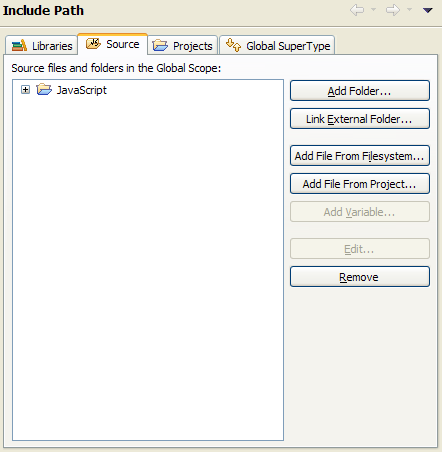

In order to limit the source files in the global scope of a JavaScript project, the JSDT supports specifying project source folders. By default the project root is a source folder, so for most instances no source folder configuration is necessary.
Depending on the kind of project, source is added to the global scope differently:
<script src='...'> tag.Source folders can be easily configured on the JavaScript > Include Path properties page on the Source tab.
 Include Path properties page showing the Source tab">